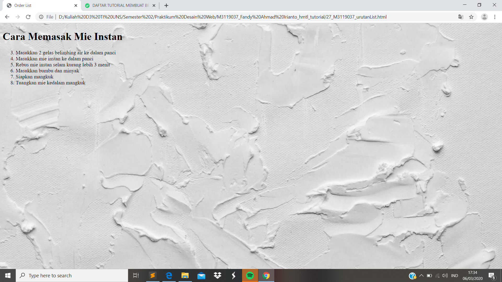

UnOrdered List
//Urutan List digunakan untuk mengubah urutan sesuai apa yang kita inginkan. Untuk perintah yang digunakan yakni dengan menambahkan start urutan keberapa yang kita akan mulai pada <ol> , seperti kali ini saya ingin memulai pada baris ke tiga maka perintah yang digunakkan yaitu <ol start="3">
Codingan
<!DOCTYPE html>
<html>
<head>
<meta charset="UTF-8">
<title> Order List </title>
</head>
<body style ="background:url(background.jpg); background-repeat: no-repeat; background-size: cover;">
<h1> Cara Memasak Mie Instan</h1>
<ol start="3">
<li> Masukkan 2 gelas belimbing air ke dalam panci </li>
<li> Masukkan mie instan ke dalam panci </li>
<li> Rebus mie instan selam kurang lebih 3 menit </li>
<li> Masukkan bumbu dan minyak </li>
<li> Siapkan mangkuk </li>
<li> Tuangkan mie kedalam mangkuk</li>
</ol>
</body>
</html>
Tampilan Hasil Percobaan

Kesimpulan
Pada percobaan urutan list kali ini kita dapat dengan leluasa jika ingin menggubah urutan sesuai dengan apa yang kita ingin kan dengan menggunakan perintah < ol start="n" >, n kali ini menunjukan urutan ke berapa yang kita inginkan.